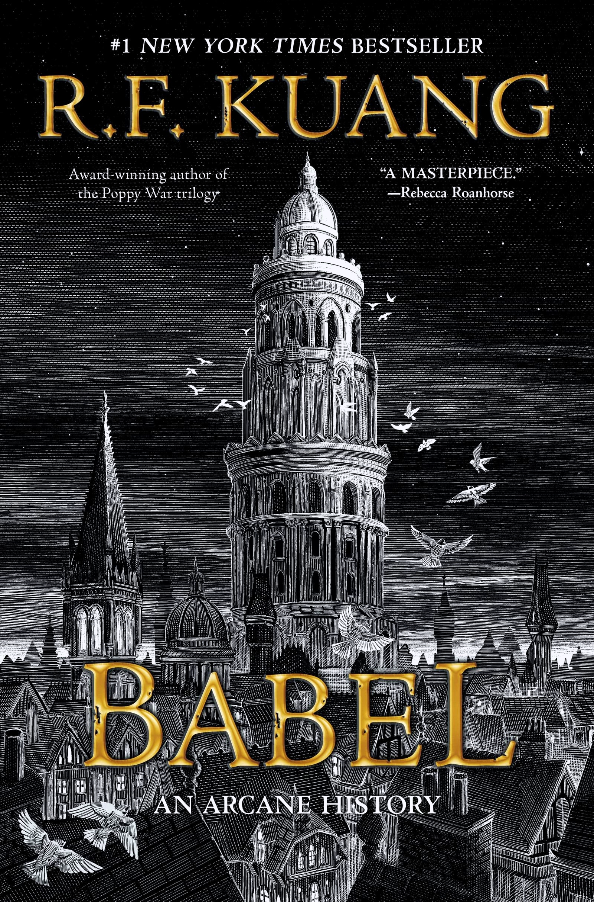

Babel
1828. Robin Swift, orphaned by cholera in Canton, is brought to London by the mysterious Professor Lovell. There, he trains for years in Latin, Ancient Greek, and Chinese, all in preparation for the day he’ll enroll in Oxford University’s prestigious Royal Institute of Translation—also known as Babel. The tower and its students are the world's center for translation and, more importantly, magic. Silver-working—the art of manifesting the meaning lost in translation using enchanted silver bars—has made the British unparalleled in power, as the arcane craft serves the Empire's quest for colonization. For Robin, Oxford is a utopia dedicated to the pursuit of knowledge. But knowledge obeys power, and as a Chinese boy raised in Britain, Robin realizes serving Babel means betraying his motherland. As his studies progress, Robin finds himself caught between Babel and the shadowy Hermes Society, an organization dedicated to stopping imperial expansion. When Britain pursues an unjust war with China over silver and opium, Robin must decide . . .
-“English did not just borrow words from other languages; it was stuffed to the brim with foreign influences, a Frankenstein vernacular. And Robin found it incredible, how this country, whose citizens prided themselves so much on being better than the rest of the world, could not make it through an afternoon tea without borrowed goods.”
Katabasis
The story of a hero’s descent to the underworld. Alice Law has only ever had one goal: to become one of the brightest minds in the field of Magick. She has sacrificed everything to make that a reality: her pride, her health, her love life, and most definitely her sanity. All to work with Professor Jacob Grimes at Cambridge, the greatest magician in the world. That is, until he dies in a magical accident that could possibly be her fault. Grimes is now in Hell, and she’s going in after him. Because his recommendation could hold her very future in his now incorporeal hands and even death is not going to stop the pursuit of her dreams…. Nor will the fact that her rival, Peter Murdoch, has come to the very same conclusion. With nothing but the tales of Orpheus and Dante to guide them, enough chalk to draw the Pentagrams necessary for their spells, and the burning desire to make all the academic trauma mean anything, they set off across Hell to save a man they don’t even like.
-“Hell’s lonely,” said Peter. “You’ll want company.” “Hell is other people, I’ve heard.”